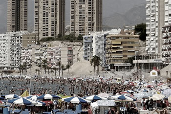
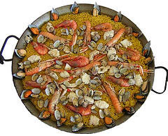

De vacaciones en Benidorm
7.30 Todo en orden 
Sale el sol y Benidorm se despierta de una noche que no ha tenido fin. Las playas están tranquilas, ordenadas y con sombrillas de personas que ya han bajado hasta la orilla del mar para obtener sitio , que al mediodía será imposible encontrar.
Es uno de los centros turísticos más importantes. «Está a dos horas del resto de Europa, es cosmopolita y segura en todos los aspectos», señala Andrés Guerrero, presidente de la asociación de agencias de viajes. La población de Benidorm,, 50.176 personas, se multiplica por seis en estos meses de verano, hasta superar las 370.000 personas. Es una fábrica de ocio que recibe unos cinco millones de turistas anuales. Es la cuarta ciudad europea en plazas hoteleras (34.000) tras Madrid, París y Londres.
10.00 Uniforme playero
La mayoría de los veraneantes se marchan a la playa con su uniforme playero: en bañador, sin camiseta, con riñonera, sandalias, colchón acuático, gorrita y toalla.
11.00 Arriba el telón
Todo está prácticamente listo para comenzar una larga agotadora jornada de playa. La temperatura ronda los 30 grados, luce el sol, la humedad relativa es del 65 por ciento, la temperatura del agua es de 24 grados y una suave y refrescante brisa eriza las olas que rompen la playa.
12.00 Siempre fieles
Los 5,3 kilómetros de playa están de bote en bote. Según datos del ayuntamiento, a esta hora punta puede haber en la playa de Levante unas 35.000 personas. Lo del espacio no es problema para Gabriel, un madrileño de 55 años que lleva veraneando en la ciudad desde hace 20 años. «Me gusta, me gusta. Es una ciudad con alegría, juerga, música… Me gustan las orquestinas de los bares, la arquitectura, los edificios.»
14.00 Ensalada, paella y sangría 
Ensalada, paella y sangría, dieta mediterránea a la orilla del mar. Extranjeros y nacionales se desviven por pedir la paella en sus más variadas formas. En Benidorm hay casi 350 restaurantes. Muchos se encuentran en primera línea de la playa; otros están en el barrio antiguo.
19.00 Como langostas
Cuando el sol empieza a declinar, la actividad playera decae considerablemente. Es una hora en la que se está a gusto tumbado en la arena. Eso es lo que hace un grupo de 13 jóvenes holandeses que toman su enésima cerveza. Están rojos como langostas pero contentos de estar en España.
21.00 ¡A la calle!
Las luces del paseo se encienden lentamente y la calle empieza a bullir. Las más de 230 cafeterías y 920 bares comienzan a llenarse de una diversidad de gente. Las tiendas continúan abiertas. En la ciudad hay más de mil establecimientos que son visitados por los ávidos de «comprar algún recuerdo para la familia».
24.00 El karaoke
El reloj da la medianoche. El karaoke causa furor; niños y mayores se emboban con los aspirantes a Julio Iglesias. También pequeños grupos musicales y shows alegran la noche.
3.00 ¡A trabajar!
Mientras muchos se divierten, Tomás Antón trajina por la playa de Levante con su tractor. Su trabajo es importante: dejar la playa limpia. El Ayuntamiento de Benidorm considera sus playas «como la niña de sus ojos». Las cuidan al máximo.
5.00 Sin freno
El que llega hasta esta hora va a dormir muy poco; mejor dicho, nada. Es la hora de cerrar para los pubs y disco-bares que hay en la zona de la playa. Algunos regresan al hotel mientras otros van a desayunar en un café en la playa. La actividad terminará sólo cuando el sol vuelva a salir sobre la playa.